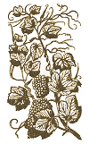

Moroccan Carrot and Orange Salad
Description
The carrot and orange salad is a Morrocan favorite
which makes the most out of three widely used ingredients.
It is certainly our time to try this wonderful recipe
Ingredients
- 1-½ cups raisins
- 3 lbs., peeled and grated carrots
- 4 oranges, peeled, pith removed, and broken into segments
Steps
- Get some orange
- Wait for me
- Play some music
